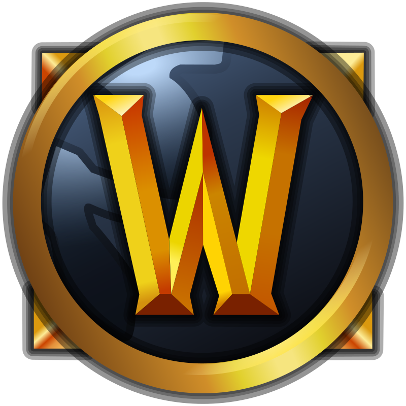

A World of Warcraft (röviden WoW) a Blizzard Entertainment 2004-ben megjelent számítógépes játéka. A Battle.net hálózat része. A nagy sikerű Warcraft sorozat történetét folytatja, pontosan két évvel a Warcraft III: The Frozen Throne eseményei után kapcsolódik be a történetbe. A játék stílusa MMORPG, azaz csak interneten keresztül játszható szerepjáték, melyet egyszerre akár több százan vagy ezren is játszhatnak egy online világban. A játékosoknak rendszeresen elő kell fizetniük a játékra.
 Index